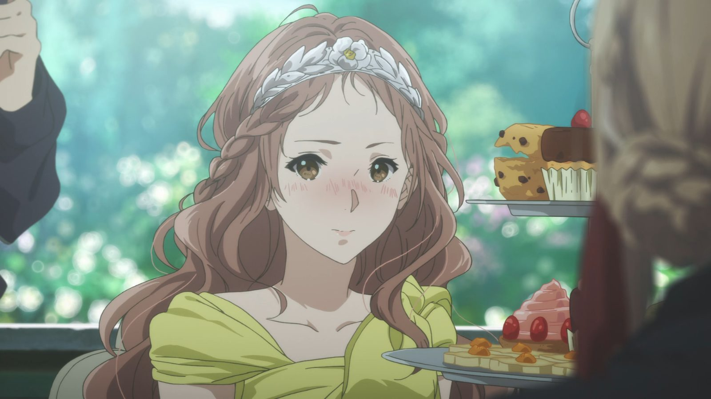

¿Escribes cartas que unen a las personas?
En el capítulo 5 de Violet Evergarden, somos transportados al reino de Drossel, donde Violet se convierte en la confidente de la princesa Charlotte. Encargada de escribir las cartas de amor de la princesa a su prometido, Violet se sumerge en un mundo de emociones complejas y sentimientos ocultos. A través de sus palabras, la joven muñeca automática comienza a comprender la profundidad del amor y la importancia de expresar los sentimientos más íntimos.
Sin embargo, a medida que avanza la historia, Charlotte comienza a sospechar de la autenticidad de las cartas que recibe. A pesar de la belleza de las palabras escritas por Violet, la princesa intuye que algo no encaja. Este giro en la trama nos lleva a reflexionar sobre la verdadera naturaleza del amor y la importancia de la honestidad en las relaciones. A medida que Violet continúa explorando su propio corazón y el de los demás, descubrimos facetas desconocidas de su personalidad y nos emocionamos con su crecimiento personal.
Galeria
